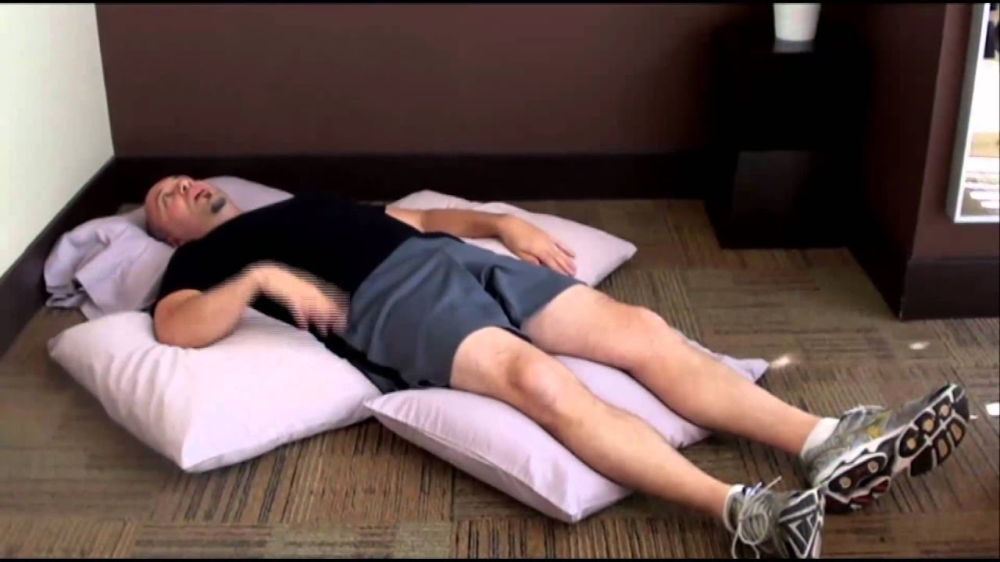
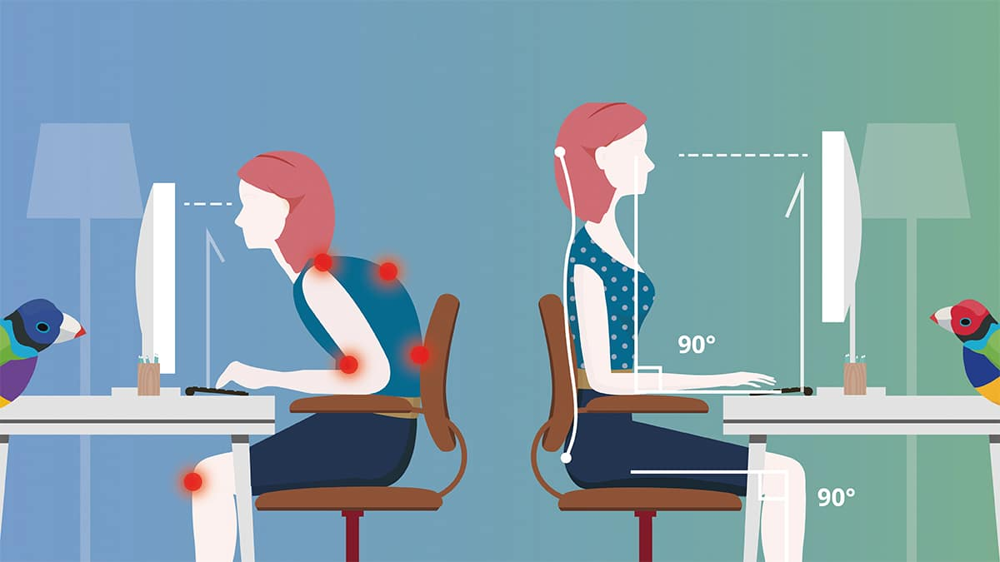
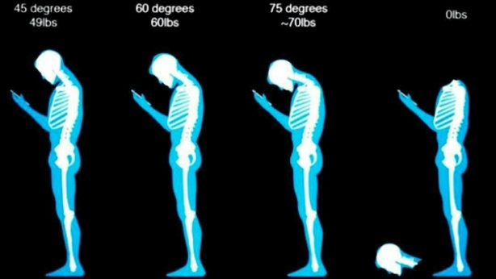
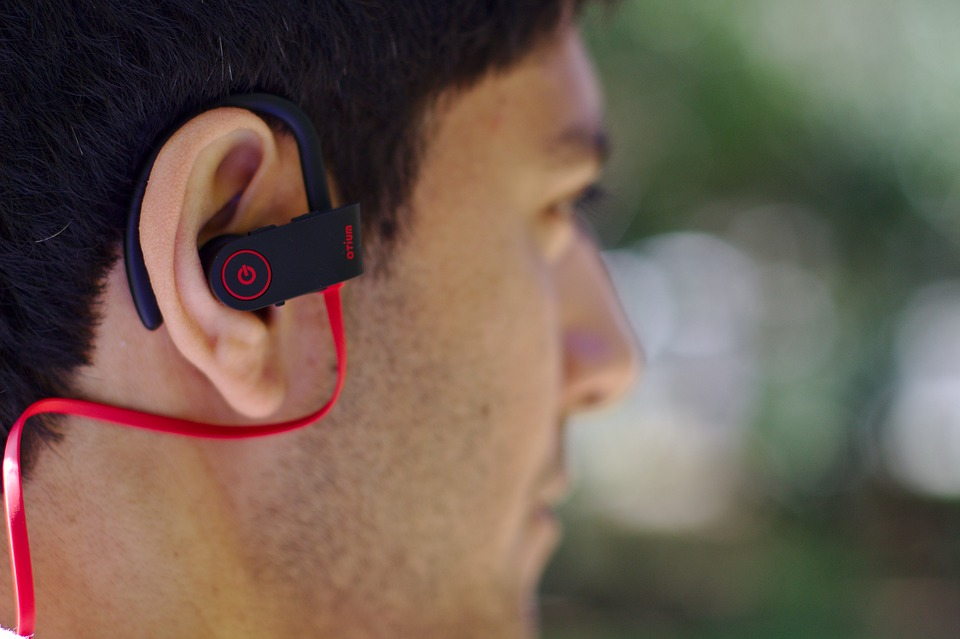
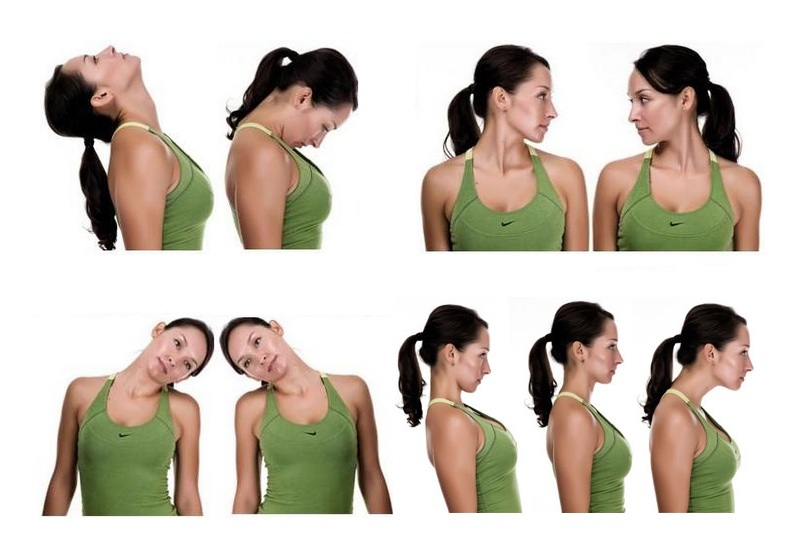
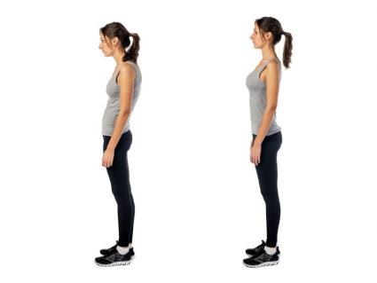

Советы для предотвращения боли в шее

Наверное, можно с уверенностью сказать, что большинство из нас в какой-то момент времени просыпалось с болью в шее или может вспомнить событие или травму, которая привела к боли в шее. На самом деле, в любой момент времени 13% взрослых страдают от боли в шейном отделе позвоночника.
Боль в шее обычно возникает из-за мышц, сухожилий и связок, которые в общем называются мягкими тканями в шейного отдела позвоночника. Нагрузка на мышцы и сопутствующий мышечный спазм часто вызываются проблемами с шеей, такими как спинальный стеноз, артрит или дегенеративные изменения дисков. Они могут быть вызваны травмой, но часто происходят скрыто или без видимых или поддающихся выявлению причин.
Независимо от того, является ли боль в шее хроническим заболеванием или вы только что проснулись с болью, следующие советы помогут Вам испытывать меньше болевых ощущений.
Попробуйте новую подушку
С точки зрения комфорта и поддержки вашей шеи, пока вы спите, есть много вариантов, и вам может понадобиться некоторое количество проб и ошибок, чтобы найти то, что работает лучше всего для вас. Как правило, лучше всего использовать подушку, которая держит ваш шейный отдел позвоночника в нейтральном положении, что означает, что естественные изгибы вашей шеи будут поддерживаться.
Есть несколько вариантов, и то, что работает лучше всего для вас будет в значительной степени определяться причиной ваших проблем в шее. Вот несколько примеров:
Некоторые люди говорят, что боль в шее уменьшается, когда они лежат на спине с головой, поддерживаемой относительно плоской подушкой, или с ортопедической подушкой, которая имеет выемку, где голова лежит и дополнительную поддержку под шеей.
Другие люди отмечают, что поддержка подушкой в положении на боку более комфортно.
Некоторые предпочитают сидеть в откидном положении или в регулируемой кровати с наклоном верхней части тела. В таком наклонном положении они могут использовать небольшую или относительно плоскую подушку.
Если Вы, как и большинство людей, меняете свое положение во время ночного сна, убедитесь, что у вас есть подушка или несколько подушек, которые будут работать в каждом из положений сна.
Спите на спине, если сможете

В целом, сон на спине — это лучшее положение для комфортного отдыха всего позвоночника. Некоторые люди с проблемами в шее отмечают, что им помогает спать на спине если положить подушки под каждую руку, с идеей, что поддержка каждой руки снимает напряжение с шеи.
Некоторые люди с артрозом позвоночника или стенозом могут обнаружить, что спать с небольшим наклоном легче, поэтому они добавляют подушки и/или переключаются на регулируемую кровать.
Если Вы предпочитаете спать на боку, убедитесь, что ваша подушка не слишком высока обычно около 10-15 см толщиной, в зависимости от плотности материала подушки и расстояния между шеей и точкой плеча. Эта высота, как правило, должны уберечь голову и шею от поворота или сгибания в неестественную позицию.
Суть в том, что если это неудобно, то это не очень хорошая подушка
Убедитесь, что монитор компьютера находится на уровне глаз

Устраивайтесь поудобнее перед компьютером и закройте глаза. Когда вы открываете их, ваш взгляд должен быть прямо в верхней трети экрана компьютера. Если вы обнаружите, что вам нужно смотреть вниз, вам нужно поднять монитор вверх.
Ноутбуки чаще всего требуют, чтобы вы наклонили голову вниз, чтобы увидеть экран, поэтому подключение ноутбука к отдельному монитору или экрану может быть полезным.
Избегайте напряжения шеи при отправке сообщений на телефоне

Отправка текстовых сообщений или взгляд вниз на мобильный телефон или мобильное устройство в течение любого периода времени приводит к чрезмерной нагрузке на шею.
Со временем дополнительная нагрузка на суставы, связки и диски шеи может привести к преждевременным дегенеративным изменениям в шее. Советы по предотвращению повреждения шеи при отправке текстовых сообщений включают в себя поднятие телефона или мобильного устройства до уровня глаз, минимизацию времени на отправку текстовых сообщений, отдых рук.
Используйте гарнитуру

Если вы проводите много времени за телефоном, старайтесь не наклонять голову в сторону и не зажимать телефон плечом на шее.
Любой тип устройства громкой связи, например, гарнитура или наушник — это отличный способ разговаривать по телефону, не поддаваясь искушению неправильно держать телефон.
Тренируйте мышцы шеи

Держите мышцы шеи в тонусе, выполняя короткие комплекты упражнений по укреплению и растяжке в течение дня. Одно из самых простых упражнений – отжимания от пола. Для упрощения можно отжиматься с колен. Вы быстро почувствуете эффект даже после первого раза.
Не допускайте дефицита воды
Еще одна причина пить много воды в течение дня - это питать и увлажнять межпозвонковые диски - суставные структуры, лежащие между позвонками на шее. Эти диски состоят в основном из воды, поэтому сохранение хорошего увлажнения поможет сохранить ваши диски гибкими и сильными.
В идеале, постарайтесь выпивать как минимум 8 больших стаканов воды в день. Попробуйте несколько вариантов и посмотрите, что лучше всего подойдет вам:
- Держите бутылку воды при себе и глотайте в течение дня.
- Установите будильник на ваших часах или мобильном телефоне каждые 2 часа и выпивайте стакан воды каждый раз, когда он звонит.
- Пейте 2-3 больших стакана воды с каждым приемом пищи
Равномерно несите вес
Обычная ошибка, которую совершают люди, — это ношение тяжелой сумки или портфеля на одной стороне тела. Эта неравномерная нагрузка может привести к тому, что плечи станут неровными, напрягая мышцы шеи.
Во-первых, постарайтесь облегчить нагрузку, взяв с собой в сумку или портфель только самое необходимое, и постарайтесь всегда держать плечи на одном уровне. Подумайте об использовании рюкзака, который равномерно распределяет вес по обоим плечам.
Сохраняйте поддерживающую осанку

Плохая осанка может вызывать боли в шее из-за напряжения мышц и связок, поддерживающих шею, что со временем приводит к травме.
Плохая осанка с головой и плечами вперёд является наиболее распространённым примером плохой осанки, которая усиливает боль в шее. Это происходит, когда шея наклоняется вперед, помещая голову перед плечами.
Эта поза приводит к тому, что верхняя часть спины также опускается вперед, создавая нагрузку на весь позвоночник. Для хорошей осанки стремитесь центральной частью грудины вверх при этом лопатки опускайте вниз. Используйте зеркало для контроля осанки.
Я надеюсь, что приведенные выше советы помогут вам в ваших усилиях по уменьшению и предотвращению боли в шее.